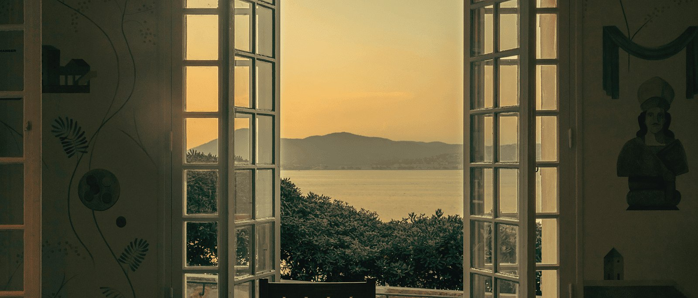
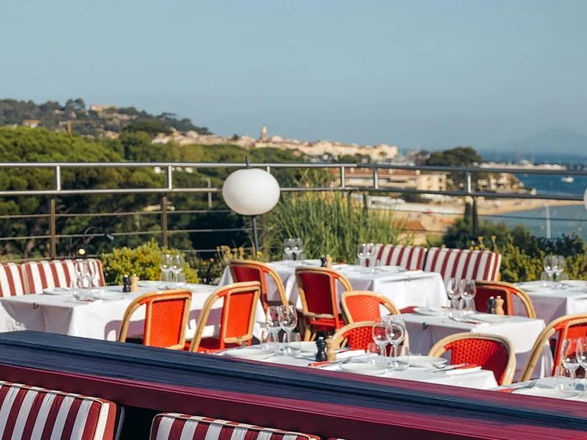
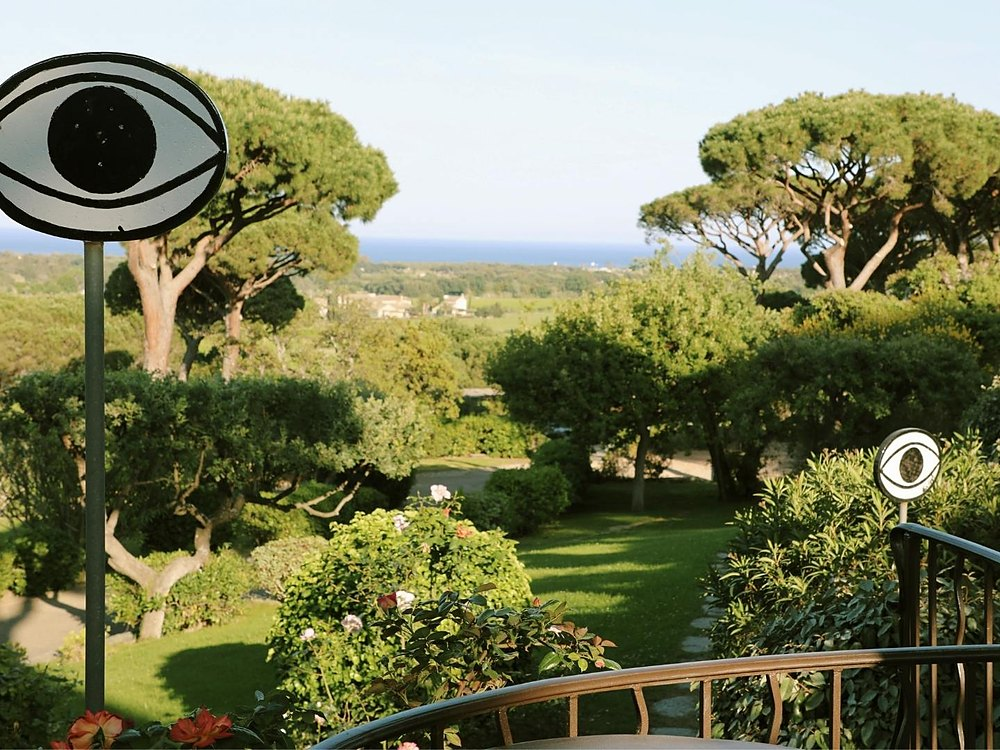
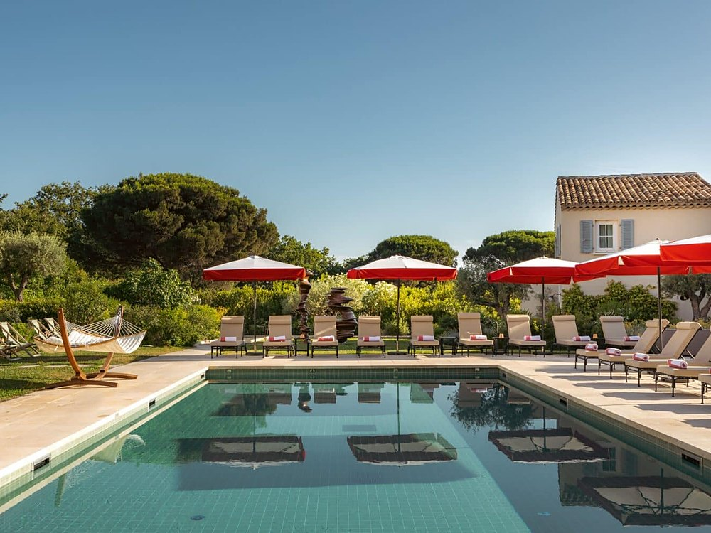
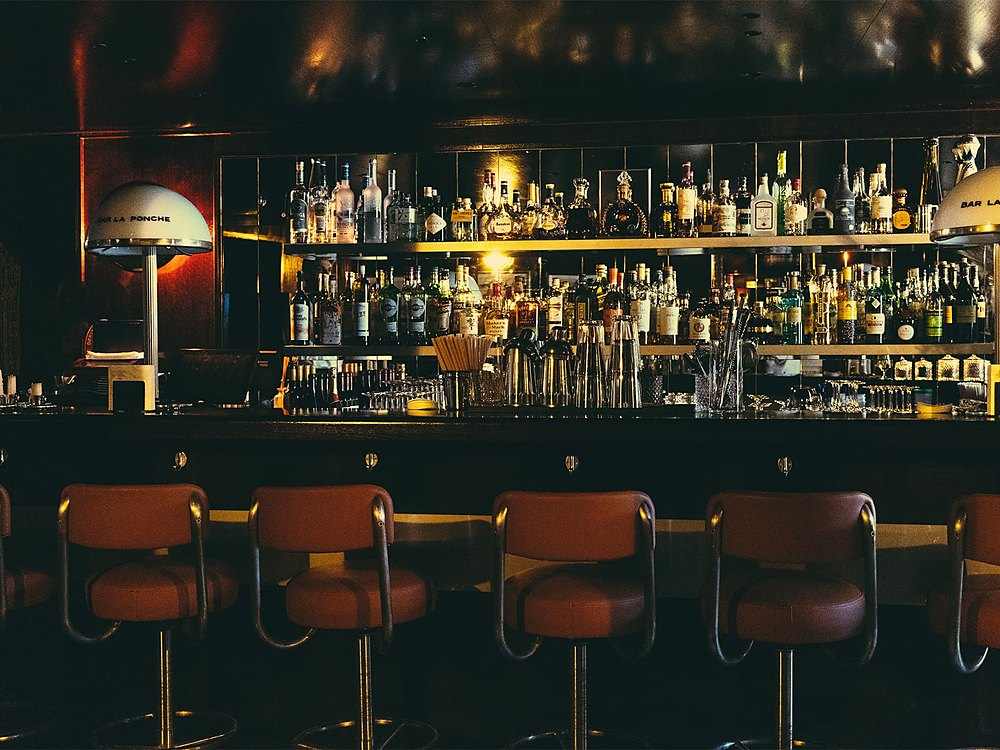
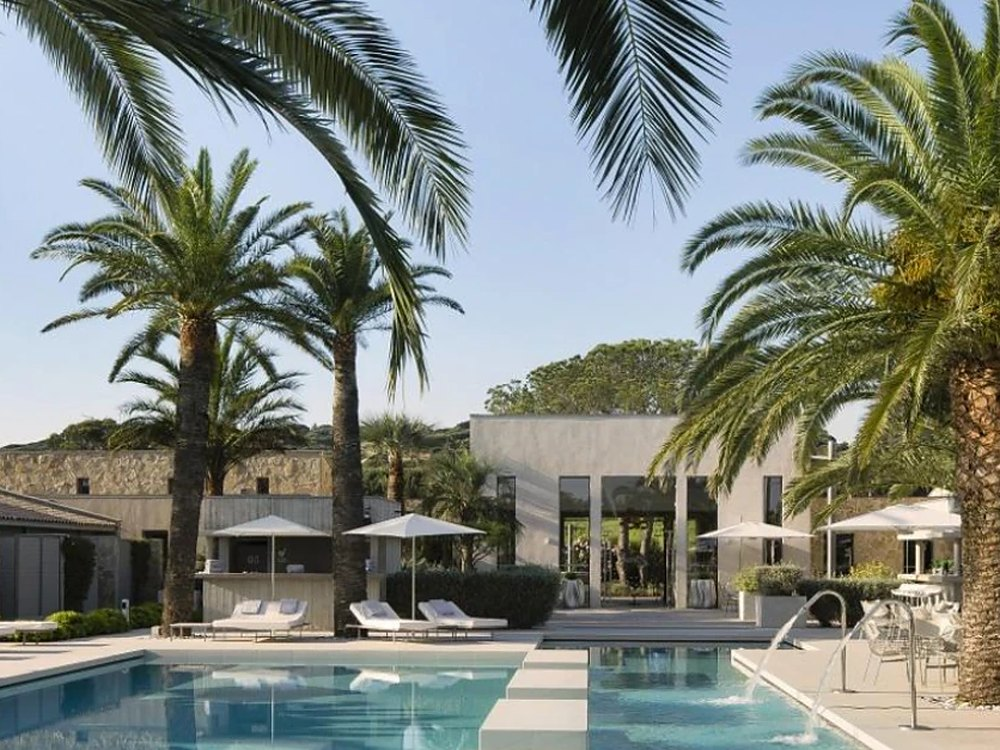
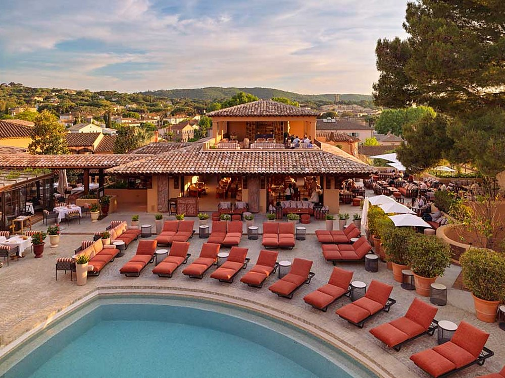
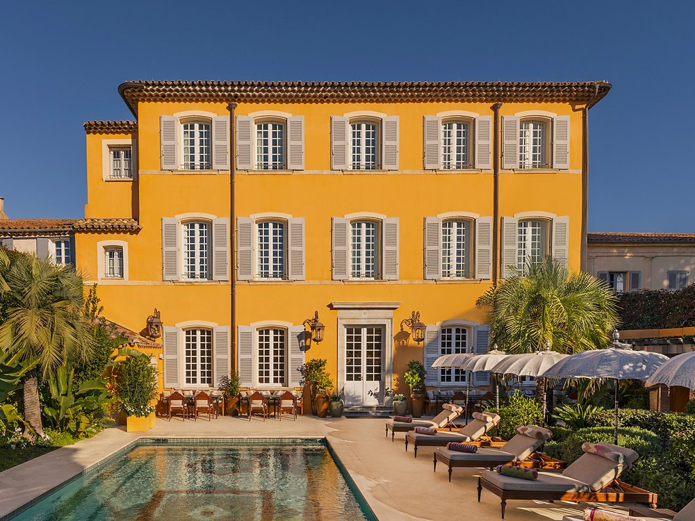
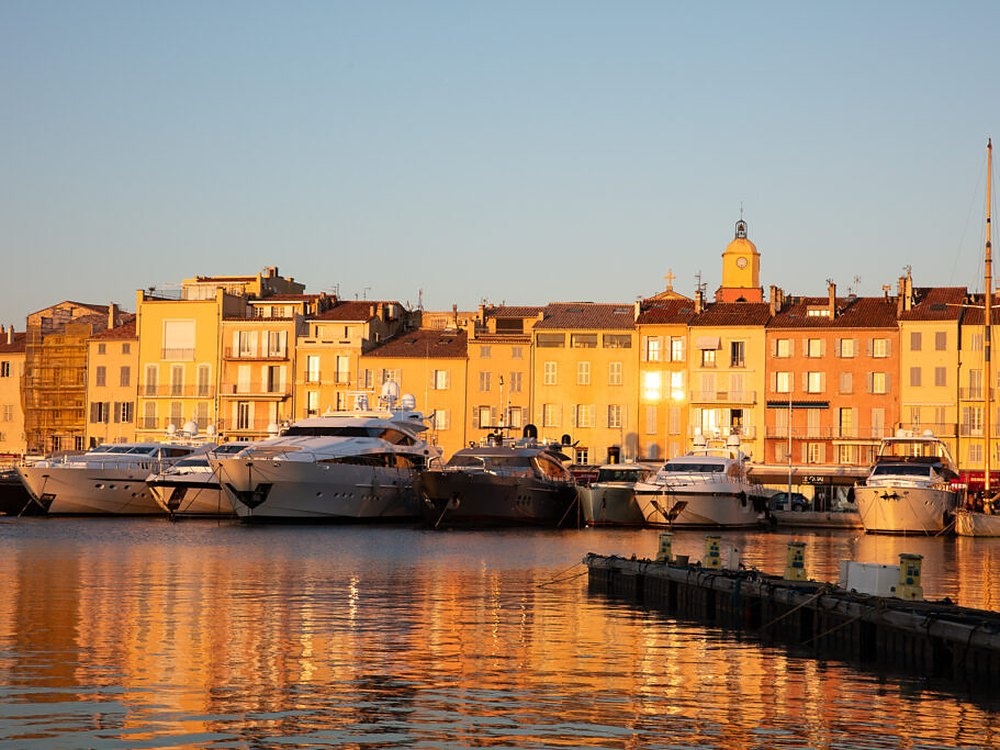

Meilleurs hôtels à Saint-Tropez : 8 adresses classées en 2026
Un bar ouvert par Boris Vian en 1949, un palais bâti en 1835 pour une princesse indienne, et deux façons de séjourner dans le golfe : le village ou la pinède.

La Ponche, quatrième de ce classement, et la baie au couchant. Photo : site officiel de l'établissement.
L'essentielDeux façons de séjourner dans le golfe
- Le golfe offre deux séjours différents, et c'est une chance. Six de nos huit adresses sont dans le village de Saint-Tropez, à pied du port et des ruelles. Les deux premières du classement ont choisi les hauteurs : le Kube à Gassin, la Villa Marie à Ramatuelle, avec l'espace, la pinède et la vue que cela permet. Nous indiquons la commune de chacune pour que vous choisissiez en connaissance de cause.
- Le plus gros spa du golfe n'est pas dans un palace historique. Il est au Kube : 300 m² sur deux niveaux, six cabines dont une double, hammam et sauna, sous enseigne myBlend. C'est la seule des huit maisons à publier la surface de son spa, ce qui rend toute comparaison chiffrée impossible avec les sept autres.
- Et la plus belle histoire est quatrième. La Ponche compte vingt et une chambres et un bar que Boris Vian a ouvert en 1949 dans une grange mitoyenne, comme annexe tropézienne du Saint-Germain-des-Prés. Elle obtient le meilleur Indice Azur du classement sans en prendre la tête, et c'est exactement ce que cet indice sert à dire.
Palmarès documentaire. Nous n'avons pas dormi dans ces huit maisons. Les éléments de cette page ont été relevés le 4 septembre 2026 sur les sites officiels des établissements, page par page. Les tarifs se demandent directement aux maisons, qui établissent leur prix selon la saison, la durée et la vue ; nous préférons vous y renvoyer plutôt que de recopier les chiffres des plateformes.
Notre sélection : les 8 meilleurs hôtels de Saint-Tropez

Kube, le seul spa dont on connaisse la surface 9,3/10
319 route du littoral, 83580 Gassin · 5 étoiles · groupe Machefert · Indice Azur 3,9/5
Il prend la tête, et il n'est pas à Saint-Tropez : Gassin. 70 chambres réparties dans neuf bâtiments et trois univers, trois piscines, un rooftop, Le Petit Célestin, et une plage affiliée, la plage Cybèle, elle-même à Ramatuelle. Le spa est le seul du classement dont l'établissement publie les dimensions : 300 m² sur deux niveaux, six cabines dont une double, hammam et sauna, sous enseigne myBlend. La maison communique sur myBlend, et c'est ce que nous retenons. Il prend la première place sur les équipements et sur la table, pas sur l'âme : son Indice Azur est le plus bas des huit, parce que le bâti est contemporain et ne doit rien au village. Le bémol : neuf bâtiments et une route du littoral, ce n'est pas une adresse pour qui cherche le silence.
70 chambres en neuf bâtiments · Spa myBlend de 300 m², six cabines · Trois piscines et un rooftop · Plage Cybèle à Ramatuelle · Site officiel →

Villa Marie, quarante-cinq clés dans trois hectares de pins 9,1/10
1100 chemin de Val Rian, 83350 Ramatuelle · 5 étoiles · Indice Azur 4,4/5
Autre maison vendue sous l'étiquette Saint-Tropez et située à Ramatuelle, sur les hauteurs de Pampelonne, à quatre kilomètres des plages. Elle annonce 45 chambres et suites, toutes avec terrasse ou balcon, dans une pinède de trois hectares. Le spa est signé Pure Altitude, la marque de la famille Sibuet, et le restaurant s'appelle Dolce Vita. La maison commercialise un séjour bien-être de trois nuits comprenant un soin Pure Altitude de cinquante minutes par personne et par jour. Le bémol : la route pour y monter, et une fermeture saisonnière.
45 chambres et suites · Pinède de 3 hectares · Spa Pure Altitude · Restaurant Dolce Vita · Site officiel →

Lou Pinet, la plus grande piscine du classement 9,0/10
Chemin du Pinet, 83990 Saint-Tropez · 5 étoiles · collection Pariente · Indice Azur 4,5/5
L'adresse la plus sous-estimée du golfe. On lit souvent seize chambres ; la maison en annonce 34 clés. Ce n'est donc pas un hôtel confidentiel, c'est un hôtel discret, ce qui vaut mieux. Son argument principal est dehors : la maison écrit que sa piscine est l'une des plus grandes de Saint-Tropez, et qu'elle réunit tout l'hôtel autour d'elle. Le Spa by Tata Harper et le restaurant Beefbar complètent l'ensemble, dans un jardin tropézien planté de pins parasols. Le bémol : le chemin du Pinet n'est pas le port, il faut compter le trajet.
34 clés · L'une des plus grandes piscines de Saint-Tropez · Spa by Tata Harper · Restaurant Beefbar · Site officiel →

La Ponche, et le bar que Boris Vian a ouvert en 1949 8,9/10
Quartier de la Ponche, 83990 Saint-Tropez · 5 étoiles · Indice Azur 4,8/5
C'est la seule des huit qui ne se visite pas, qui se traverse. La maison est née en 1938 d'un bar de pêcheurs, et son bar actuel date de 1949, quand Boris Vian a annexé une grange mitoyenne pour y créer le Saint-Germain-des-Prés-La Ponche. La maison le raconte elle-même, en ces termes. Aujourd'hui 21 chambres et quatre appartements qui portent des noms plutôt que des numéros : Danièle Thompson, Jack Nicholson, Pablo Picasso et La Glaye. Le restaurant est pensé par le chef Simon Pinault et dirigé par Marine Bon Mugnaïni. L'espace bien-être propose les soins exclusifs PERS, du yoga et du Pilates face à la mer. Elle obtient le meilleur Indice Azur du classement sans en prendre la tête, et c'est exactement ce que cet indice sert à dire. Le bémol : c'est le cœur du village ancien, donc les ruelles, donc le stationnement.
21 chambres et 4 appartements nommés · Bar ouvert en 1949 par Boris Vian · Chef Simon Pinault · Soins exclusifs PERS · Site officiel →

Hôtel Sezz, la seule étoile du classement 8,8/10
151 route des Salins, 83990 Saint-Tropez · 5 étoiles · Indice Azur 4,2/5
Nous lui consacrons déjà un avis détaillé, et la note reprise ici est celle de cet avis : chez nous, une adresse ne porte qu'une seule note, quelle que soit la page. Le Sezz est bien sur la commune de Saint-Tropez, au 151 route des Salins. 37 clés, un spa Susanne Kaufmann dimensionné pour la maison plutôt que pour rivaliser avec les palaces, une piscine extérieure chauffée de 200 m² et une table, Colette, étoilée au Guide MICHELIN depuis 2021. C'est la seule étoile de ce classement. Le bémol : deux kilomètres du centre, donc la navette.
37 clés · Restaurant Colette, étoilé au Guide MICHELIN · Spa Susanne Kaufmann · Piscine chauffée de 200 m² · Site officiel →

Byblos, quatre-vingt-six clés et une nuit de mai 1967 8,5/10
Avenue Paul Signac, 83990 Saint-Tropez · 5 étoiles · Indice Azur 4,3/5
L'institution du golfe, et une histoire qui mérite d'être racontée juste. Son fondateur est Jean-Prosper Gay-Para, hôtelier libanais, et la maison a été inaugurée le 27 mai 1967, en présence de Brigitte Bardot et de Mireille Darc. Elle annonce 86 chambres et suites. Le spa est Byblos Spa by Sisley, la boîte de nuit s'appelle Les Caves du Roy et la plage, Byblos Beach, est à Ramatuelle. Le bémol : c'est une maison de fête, et cela s'entend.
86 chambres et suites · Inauguré le 27 mai 1967 · Byblos Spa by Sisley · Les Caves du Roy · Site officiel →

Airelles Saint-Tropez, le palais d'une princesse indienne 8,3/10
52 rue Gambetta, 83990 Saint-Tropez · 5 étoiles · enseigne Airelles · Indice Azur 4,6/5
La plus petite du classement, et celle qui a la plus belle histoire. La demeure a été bâtie en 1835 par le général Jean-François Allard pour son épouse, la princesse Bannu Pan Deï, rencontrée au Pendjab. D'où le nom, et d'où le décor. La maison est passée sous enseigne Airelles et compte 12 chambres et suites, un chiffre plus petit que celui qu'on lit habituellement. Piscine en mosaïque, et une table, Les Délices du Pan Deï, confiée au chef Paul Benimelli. Son Indice Azur est l'un des plus élevés du classement, parce que peu d'adresses sont à ce point inséparables de leur décor. Le bémol : douze clés à deux pas de la place des Lices, il faut aimer être au centre.
12 chambres et suites · Demeure bâtie en 1835 · Piscine en mosaïque · Table Les Délices du Pan Deï · Site officiel →

Hôtel de Paris, le rooftop et la traverse de la Gendarmerie 8,1/10
1 traverse de la Gendarmerie, 83990 Saint-Tropez · 5 étoiles · Indice Azur 3,7/5
C'est la plus urbaine des huit, à deux pas du port, décorée par l'architecte Sybille de Margerie dans un registre qui revendique les années soixante. Deux précisions, parce que l'on lit souvent autre chose : le spa est signé Clarins, et la table s'appelle Le Pationata. S'y ajoutent le bar l'Atrium dans le lobby, et ce qu'elle présente comme l'unique rooftop du village. Elle tient aussi une plage, La Serena. Le bémol : peu d'extérieur comparé aux maisons de la pinède, et le bruit du village.
Spa by Clarins · Restaurant Le Pationata · Rooftop et bar l'Atrium · Plage La Serena · Site officiel →
Tableau comparatif : hôtels du golfe de Saint-Tropez 2026
| Rang | Établissement | Commune | Clés | Spa | Score LMHS |
|---|---|---|---|---|---|
| 1 | Kube | Gassin | 70 | myBlend, 300 m² | 9,3 |
| 2 | Villa Marie | Ramatuelle | 45 | Pure Altitude | 9,1 |
| 3 | Lou Pinet | Saint-Tropez | 34 | Tata Harper | 9,0 |
| 4 | La Ponche | Saint-Tropez | 21 + 4 appts | PERS | 8,9 |
| 5 | Hôtel Sezz | Saint-Tropez | 37 | Susanne Kaufmann | 8,8 |
| 6 | Byblos | Saint-Tropez | 86 | Sisley | 8,5 |
| 7 | Airelles, Pan Deï Palais | Saint-Tropez | 12 | n. c. | 8,3 |
| 8 | Hôtel de Paris | Saint-Tropez | n. c. | Clarins | 8,1 |
Relevé le 4 septembre 2026 sur les sites officiels. En corail, les deux adresses des hauteurs, à Gassin et à Ramatuelle. « n. c. » signifie que la maison ne publie pas l'information et que nous préférons le dire.
Protocole LMHS : comment nous avons classé ces hôtels
Le Score LMHS agrège six critères pondérés : la qualité du bâti et de la décoration, l'offre de bien-être, la table, le service tel que la maison l'organise, la cohérence entre ce qui est promis et ce qui est publié, et enfin la singularité, c'est-à-dire ce que cette adresse offre qu'aucune autre du classement n'offre.
L'Indice Azur, sur 5, mesure autre chose : à quel point une maison appartient vraiment à ce littoral. Un hôtel peut être excellent et obtenir un Indice Azur moyen s'il pourrait se trouver ailleurs sans que rien ne change. C'est ce qui explique que le Kube, premier au score, ferme la marche à l'Indice, et que La Ponche, quatrième au score, obtienne le meilleur Indice du classement.
Saint-Tropez : bien choisir avant de réserver
Commencez par choisir votre commune, c'est ce qui structure le séjour. Six de nos huit adresses sont dans le village de Saint-Tropez : on sort à pied, on rentre à pied, le port et les ruelles sont au bout de la rue. Les deux premières du classement ont fait un autre choix, celui des hauteurs, le Kube à Gassin et la Villa Marie à Ramatuelle : plus d'espace, la pinède, la vue, et le calme. Les deux formules sont excellentes, elles ne racontent simplement pas le même séjour. La commune figure dans notre tableau pour que le choix soit clair dès le départ.
Chaque maison a sa plage, et souvent la plus belle du secteur. Le Byblos a Byblos Beach, le Kube la plage Cybèle, toutes deux à Ramatuelle, sur le cordon de Pampelonne ; l'Hôtel de Paris tient La Serena. Ce sont de vraies adresses de plage, avec service et transats, desservies depuis l'hôtel. Prévoyez le trajet dans votre journée et demandez la navette au moment de réserver : c'est la question la plus utile à poser.
Les tarifs se demandent directement, et c'est plutôt une bonne nouvelle. Les huit maisons établissent leur prix selon la saison, la durée et la vue plutôt que par une grille figée, et aucune ne publie de barème sur son site. Nous n'en publions donc pas non plus. Un message ou un appel à la réception donne un prix ferme, souvent assorti d'une proposition plus juste que ce qu'affichent les plateformes.
Pour élargir, nous tenons aussi une sélection des hôtels de charme de la Côte d'Azur, un palmarès des meilleurs hôtels de luxe à Cannes, un classement des meilleurs spas azuréens et un palmarès des hôtels de luxe tropéziens à la sélection différente.
Questions fréquentes sur les hôtels de Saint-Tropez
Quel est le meilleur hôtel de Saint-Tropez en 2026 ?
Dans ce classement, le Kube, avec un Score LMHS de 9,3/10. Il est sur les hauteurs, à Gassin, et aligne 70 chambres réparties en neuf bâtiments, trois piscines, un rooftop nommé Le Petit Célestin et le seul spa du classement dont la surface soit publiée : 300 m² sur deux niveaux, six cabines dont une double, sous enseigne myBlend. Si vous cherchez une adresse dans le village même, la première est Lou Pinet (9,0/10), suivie de La Ponche (8,9/10). Nous tenons par ailleurs un palmarès des hôtels de luxe tropéziens, à la sélection différente.
Faut-il loger dans le village de Saint-Tropez ou sur les hauteurs ?
Les deux se défendent, et notre classement mêle volontairement les deux familles. Six de nos huit adresses sont dans le village de Saint-Tropez : on rentre à pied du port et des restaurants, dans des maisons souvent petites, de douze à quarante clés. Les deux premières du classement ont choisi les hauteurs : le Kube à Gassin et la Villa Marie à Ramatuelle, qui offrent l'espace, la pinède, la vue et de grandes piscines. Les plages de Pampelonne, elles, sont sur la commune de Ramatuelle pour tout le monde : Byblos Beach comme la plage Cybèle du Kube. Notre tableau indique la commune de chaque maison.
Quel hôtel de Saint-Tropez a le plus grand spa ?
Le Kube, à Gassin. Son spa myBlend s'étend sur 300 m² répartis sur deux niveaux, avec six cabines dont une double, un hammam et un sauna. C'est la seule des huit maisons à publier la surface de son spa, ce qui rend la comparaison difficile avec les autres. Les autres enseignes du classement sont Tata Harper chez Lou Pinet, Pure Altitude à la Villa Marie, Sisley au Byblos, Clarins à l'Hôtel de Paris et les soins exclusifs PERS à La Ponche.
Combien de chambres compte l'hôtel Lou Pinet ?
34 clés, telles que la maison les annonce. Le chiffre de seize chambres circule beaucoup, y compris dans des classements récents, mais il ne correspond pas à ce que publie l'établissement. Lou Pinet appartient à la collection Pariente, exploite le restaurant Beefbar et un Spa by Tata Harper, et écrit que sa piscine est l'une des plus grandes de Saint-Tropez.
Qui a fondé le Byblos de Saint-Tropez ?
Jean-Prosper Gay-Para, hôtelier libanais, et non Jean Castel comme on le lit souvent. La maison a été inaugurée le 27 mai 1967, en présence de Brigitte Bardot et de Mireille Darc, et tient son nom du port libanais de Byblos. Les Caves du Roy ont ouvert dans la foulée, en juillet de la même année. Le Byblos annonce aujourd'hui 86 chambres et suites, et son spa est signé Sisley.
Quel est le plus petit hôtel de luxe de Saint-Tropez ?
De notre classement, Airelles Saint-Tropez, Pan Deï Palais, avec 12 chambres et suites. Le chiffre de dix-huit chambres circule largement, il est faux. La demeure a été bâtie en 1835 par le général Jean-François Allard pour son épouse, la princesse Bannu Pan Deï, rencontrée au Pendjab. Elle se trouve 52 rue Gambetta, à deux pas de la place des Lices, et sa table s'appelle Les Délices du Pan Deï.
Le mot de LucasUn golfe, deux plaisirs
Ce qui frappe en établissant ce classement, c'est la variété. On imagine Saint-Tropez comme un seul décor, et le golfe en propose deux, également réussis. D'un côté le village, ses ruelles et ses maisons de vingt clés où l'on descend dîner à pied ; de l'autre les hauteurs de Gassin et de Ramatuelle, la pinède, l'espace et les grandes piscines. Aucune de ces huit maisons ne cherche à ressembler aux sept autres, et c'est ce qui rend le choix intéressant. Nous avons mis la commune dans le tableau pour que chacun trouve la sienne du premier coup d'œil.
Méthode et sources
Les huit fiches ont été établies le 4 septembre 2026 à partir des sites officiels des établissements, page par page. Les chiffres de clés, les noms de chefs, les enseignes de spa et les adresses proviennent tous de ces sites. Là où la maison ne publie rien, le tableau porte « n. c. » : nous ne complétons pas avec une estimation.
La note du Hôtel Sezz est reprise telle quelle de notre avis dédié, conformément à notre règle : une adresse ne porte qu'une seule note sur ce site, quelle que soit la page où elle apparaît.
La date d'inauguration du Byblos et le nom de son fondateur ont été recoupés en dehors du site de la maison, qui ne les publie pas au moment du relevé.
Aucun séjour de contrôle n'a été effectué pour ce palmarès, et aucune des huit maisons n'a été contactée avant publication. Si une information vous semble inexacte, écrivez-nous : nous corrigeons le jour même et nous datons la correction.